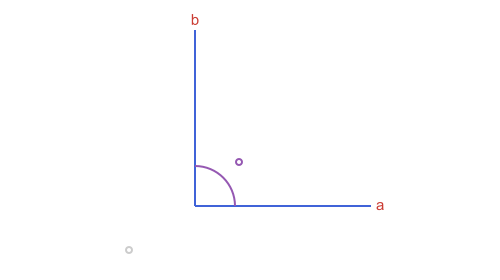
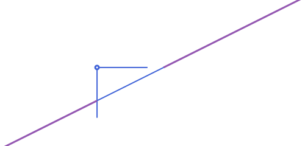
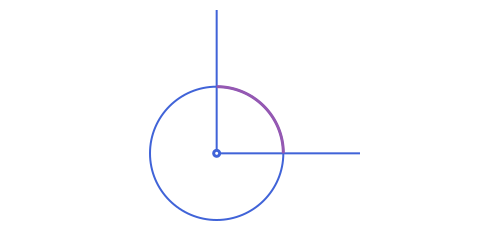
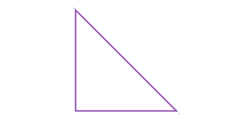

Points, Lines & Rays: Angles
Angles
An angle is a region of the plane, an APAngle2, and its measure is a number. The measures come from two free functions: angle_measure_between(u, v) (signed, counterclockwise from u to v, in (-π, π]) and angle_measure_at(vertex, p1, p2) (unsigned, in [0, π]). Use these directly when you just need a number and not something to pass around.
using Apollonius
angle_measure_between(APVector(4.0, 0.0), APVector(0.0, 4.0)) # π/21.5707963267948966APAngle2 wraps up the "angle at a vertex between two rays" idea into a small struct (vertex, a, b) so it can be passed around and measured without repeating the three points everywhere. measure/abs on an APAngle2 are exactly angle_measure_between/angle_measure_at on its two defining vectors. Unlike a bare number, it's also a genuine region of the plane (it's part of the APSet family): p in ang tests whether p falls in the infinite wedge swept counterclockwise from a to b. It's oriented: APAngle2(O, P1, P2) and APAngle2(O, P2, P1) have the same abs but opposite sign.
O = APPoint(0.0, 0.0)
P1, P2 = APPoint(4.0, 0.0), APPoint(0.0, 4.0)
ang = APAngle2(O, P1, P2)
rad2deg(measure(ang)) # 90.0: signed, counterclockwise from a to b
abs(ang) # 1.5707...: the unsigned angle, in [0, π]
is_direct(ang) # true: measure(ang) > 0
(O + APVector(1.0, 1.0)) in ang # true: inside the wedgetrue
normalized_measure is measure shifted into [0, 2π) instead of (-π, π], for when you'd rather not deal with negative angles. Swapping a and b flips the sign of measure (and is_direct) but leaves abs unchanged:
ang2 = APAngle2(O, P2, P1)
measure(ang2), is_direct(ang2) # (-π/2, false): same magnitude, opposite orientation
normalized_measure(ang2) # -π/2 + 2π = 3π/2 rad (270°), shifted into [0, 2π)4.71238898038469reverse(ang) does exactly that swap for you (ang2 == reverse(ang) above), handy when you've built an APAngle2 from points that already live in a mirrored coordinate space (e.g. after @prepare_to_picture's default flip=true, see Drawing with Luxor.jl) and need the wedge that matches what you'd see drawn, rather than its mirror image:
reverse(ang) == ang2, reverse(reverse(ang)) == ang(true, true)angle_trisectors is the free-function analogue of angle_bisectors: given a vertex and two points, it returns the two rays that cut ∠(p1, vertex, p2) into three equal parts.
rays = angle_trisectors(O, P1, P2) # 2 rays, each 30° apart (a 90° angle, /3)(APRay([0.0, 0.0] -> [3.464101615137755, 1.9999999999999998]), APRay([0.0, 0.0] -> [2.0000000000000004, 3.4641016151377544]))Both also have an APAngle2 form, splitting ang itself into equal-sized APAngle2 pieces (instead of just the intersecting rays/lines), handy when you want to keep working with wedges rather than unwrap them into points again:
angle_bisectors(ang) # (APAngle2(O,P1,bisector), APAngle2(O,bisector,P2))
angle_trisectors(ang) # the 3 equal thirds of ang, each its own APAngle2(APAngle2(vertex=[0.0, 0.0], a=[4.0, 0.0], b=[3.464101615137755, 1.9999999999999998]), APAngle2(vertex=[0.0, 0.0], a=[3.464101615137755, 1.9999999999999998], b=[2.0000000000000004, 3.4641016151377544]), APAngle2(vertex=[0.0, 0.0], a=[2.0000000000000004, 3.4641016151377544], b=[0.0, 4.0]))
distance(p, ang) follows the same mode = :region/:boundary convention as the other APSet types (see Unbounded Regions: Half-Planes, Strips & Angles): 0.0 from inside the wedge with the default :region, or always the distance to the nearer of the two bounding rays (vertex -> a, vertex -> b) with :boundary:
distance(APPoint(1.0, 1.0), ang) # 0.0: inside the wedge
distance(APPoint(-1.0, -1.0), ang; mode=:boundary) # distance to the nearer ray1.4142135623730951rotate, reflection and homothety transform vertex, a and b pointwise, so abs(ang) is always preserved, and so is the sign of measure, for every one of them, including reflection. That's a deliberate consequence of APAngle2 being a real region rather than a bare signed value: reflecting about an APLine (a true mirror) swaps a and b internally so the wedge comes back as a genuine mirror image of the original (not its complement), and that swap is exactly what keeps measure's sign unchanged too, the same convention APCircularArc2/APEllipticArc2 use for the same reason.
measure(rotate(ang, pi / 3)) ≈ measure(ang) # sign preserved
measure(reflection(ang, APPoint(1.0, 1.0))) ≈ measure(ang) # point reflection
measure(reflection(ang, APLine(O, APPoint(1.0, 1.0)))) ≈ measure(ang) # line reflection tootrueConversely, rotate(obj, ang::APAngle2, ...) goes the other way: it rotates some other object by measure(ang), driven directly by an APAngle2's own measure instead of a bare number, a stand-in for rotate(obj, measure(ang), ...), useful once you already have the angle as an APAngle2 and don't want to unwrap it by hand first:
rotate(P1, ang, O) == rotate(P1, measure(ang), O) # true: same rotation, just driven by ang directlytrueAngles from a measure or from two lines
angle_with_measure(vertex, p, θ) builds the angle whose first ray goes through p and whose second is θ radians counterclockwise from it, a negative θ opening it clockwise. APAngle2(l1, l2) is the angle at the point where two lines cross, from the direction of l1 to the direction of l2, counterclockwise. It is more than a straight angle when l2 is clockwise from l1, so swap the lines to get the other one:
a60 = angle_with_measure(APPoint(0.0, 0.0), APPoint(4.0, 0.0), pi / 3)
rad2deg(measure(a60))59.99999999999999la, lb = APLine(APPoint(0.0, 0.0), APPoint(1.0, 0.0)), APLine(APPoint(0.0, 0.0), APPoint(1.0, 1.0))
rad2deg(measure(APAngle2(la, lb))), rad2deg(measure(APAngle2(lb, la)))(45.0, -45.0)
Clipping a line, segment or ray
ang is a region, so intersection(ang, obj) for a line, a segment or a ray is the part of obj that lies inside the wedge, not the points where its two rays are crossed (see Unbounded Regions: Half-Planes, Strips & Angles for the same idea on APHalfPlane2/APStrip2). The result is always a Vector, though, not the bare value those two give: a convex ang (normalized_measure(ang) <= π, the ordinary case) never gives more than one piece, but a reflex one can give two.
crossing = APLine(APPoint(-1.0, 2.0), APPoint(5.0, 2.0))
intersection(ang, crossing)1-element Vector{APRay{2, Float64}}:
APRay([0.0, 2.0] -> [6.0, 2.0])A reflex angle (more than half the plane) is not convex: a line can cross into it, back out through the excluded wedge on the other side, and back in again, leaving two disjoint pieces instead of one:
reflex = APAngle2(O, P1, APPoint(0.0, -4.0)) # everything except the fourth quadrant
rad2deg(normalized_measure(reflex)) # 270°: more than a straight angle
intersection(reflex, APLine(APPoint(-6.0, -6.0), APPoint(16.0, 5.0)))2-element Vector{APRay{2, Float64}}:
APRay([0.0, -3.0] -> [-22.0, -14.0])
APRay([6.0, 0.0] -> [28.0, 11.0])
A point works the same way as in, without the two-piece question: the point itself if it's inside ang, nothing otherwise. Both argument orders work for all of these.
The same clipping works against an APCircle2 or APEllipse2 (or one of their arcs), still always as a Vector of pieces in that curve's own type, since a reflex ang can split a circle into two arcs too:
c = APCircle2(O, 2.0)
quarter = only(intersection(ang, c))
rad2deg(measure(quarter))90.0
Intersecting with another region
intersection(ang, other) also works when other is itself an APHalfPlane2/APStrip2/APAngle2: the region common to both, always as a Vector (0, 1, or, only when one side is reflex, up to 2 pieces). A half-plane crossing both of ang's rays closes it off into a bounded triangle:
hp = APHalfPlane2(APLine(APPoint(6.0, 0.0), APPoint(0.0, 6.0)), O)
only(intersection(ang, hp))APTriangle([6.0, 0.0], [0.0, 6.0], [0.0, 0.0])
Crossing only one ray gives an unbounded APUnboundedPolygon2 instead (see Unbounded Regions: Half-Planes, Strips & Angles for that type, and for the same idea against APHalfPlane2/APStrip2 themselves). The same clipping also works against a straight-sided APTriangle/APQuadrilateral/APStraightNgon, giving the part of the polygon inside ang; see Unbounded Regions: Half-Planes, Strips & Angles's "Clipping a bounded polygon".